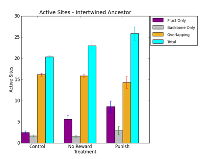
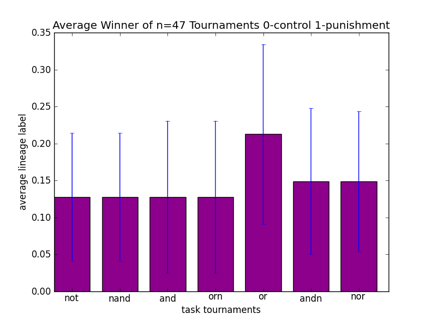
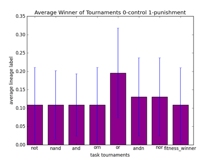
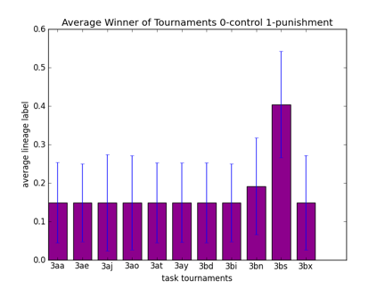

STATUS:
rosiec@Loki:/Volumes/rosiec/research/devolab_research/evolution_of_modularity/raw_data/082/INTERTWINED/last_common_ancestor_mutation_landscapes$ python ../../../../../scripts/graph_generation/bar_chart_from_csv.py --groups 3 --xticks "Control,No Reward,Punish" --columns "1,2,3,4" --legend "Fluct Only,Backbone Only,Overlapping,Total" --pair --title "Active Sites - Intertwined Ancestor" --ylabel "Active Sites" --xlabel "Treatment" --separator "," active_sites.png c*_active_site_count.csv n*_active_site_count.csv p*_active_site_count.csv

rosiec@Loki:/Volumes/rosiec/research/devolab_research/evolution_of_modularity/raw_data/082/INTERTWINED$ for i in *_8200??; do cd $i; cut -d " " -f13 last_common_ancestor.dat > last_common_ancestor.org ; cd ../; done rosiec@Loki:/Volumes/rosiec/research/devolab_research/evolution_of_modularity/raw_data/082/INTERTWINED$ for i in *_8200??; do cp $i/last_common_ancestor.org ../../../runs_staging_area/086_Testing_Evolvability/organisms/$i"__last_common_ancestor.org" ; done
STATUS:
STATUS:
STATUS
rosiec@atlantis:~/research/devolab_research/evolution_of_modularity/raw_data/086/and$ for i in *_??????; do tail -1 $i/data/average.dat | cut -d " " -f15 ; done > tournament_winners.dat rosiec@atlantis:~/research/devolab_research/evolution_of_modularity/raw_data/086$ echo "#not,nand,and,orn,or,andn,nor" > overall_tournament_winners.csv; paste -d "," not/tournament_winners.dat nand/tournament_winners.dat and/tournament_winners.dat orn/tournament_winners.dat or/tournament_winners.dat andn/tournament_winners.dat nor/tournament_winners.dat >> overall_tournament_winners.csv
rosiec@Loki:/Volumes/rosiec/research/devolab_research/evolution_of_modularity/raw_data/086$ python ../../../scripts/graph_generation/bar_chart_from_csv.py --xlabel "task tournaments" --ylabel "average lineage label" --title "Average Winner of Tournaments 0-control 1-punishment" --xticks "not,nand,and,orn,or,andn,nor" overall_tournament_winners.png overall_tournament_winners.csv

rosiec@atlantis:~/research/devolab_research/evolution_of_modularity/raw_data/086$ cat overall_tournament_winners.csv #not,nand,and,orn,or,andn,nor 1,1,1,1,1,1,0 0,0,0,0,0,0,0 0,0,0,0,1,0,0 0,0,0,0,0,1,0 0,0,0,0,1,0,0 0,0,0,0,0,0,1 0,0,0,0,0,0,0 0,0,0,0,0,0,0 1,1,1,1,1,1,1 0,0,0,0,0,0,0 0,0,0,0,0,0,0 0,0,0,0,0,0,0 0,0,0,0,1,0,0 0,0,0,0,0,0,0 0,0,0,0,0,0,0 0,0,0,0,0,0,0 0,0,0,0,0,0,0 0,0,0,0,0,0,0 0,0,0,0,0,0,0 0,0,0,0,0,0,0 0,0,0,0,0,0,0 0,0,0,0,0,0,0 0,0,0,0,0,0,0 1,1,1,1,1,1,0 0,0,0,0,0,0,0 0,0,0,0,0,0,0 0,0,0,0,0,0,0 0,0,0,0,0,0,0 0,0,0,0,0,0,0 0,0,0,0,1,0,1 0,0,0,0,0,0,0 0,0,0,0,0,0,0 0,0,0,0,0,0,0 0,0,0,0,0,0,0 0,0,0,0,0,0,1 1,1,1,1,1,1,0 1,1,1,1,1,1,1 0,0,0,0,0,0,0 0,0,0,0,0,0,0 0,0,0,0,0,0,1 0,0,0,0,0,0,0 1,1,1,1,1,1,1 0,0,0,0,0,0,0 0,0,0,0,0,0,0 0,0,0,0,0,0,0 0,0,0,0,0,0,0 0,0,0,0,0,0,0
rosiec@atlantis:~/research/devolab_research/evolution_of_modularity/raw_data/082/INTERTWINED$ for i in *_8200??; do cp $i/last_common_ancestor.dat ../../086/organisms/$i"__last_common_ancestor.dat" ; done rosiec@atlantis:~/research/devolab_research/evolution_of_modularity/raw_data/086/organisms$ for i in control_intertwined_8200*.dat; do cut -d " " -f8 $i; done > control_fitnesses.dat rosiec@atlantis:~/research/devolab_research/evolution_of_modularity/raw_data/086/organisms$ for i in punish_intertwined_8200*.dat; do cut -d " " -f8 $i; done > punish_fitnesses.dat rosiec@atlantis:~/research/devolab_research/evolution_of_modularity/raw_data/086$ for line in `cat overall_tournament_winners__plus_fitnesses.csv`; do bit1=`echo $line | cut -d "," -f8`; bit2=`echo $line | cut -d "," -f9`; result=`echo "$bit1 < $bit2" | bc`; echo $result ; done > fitness_comparison_result.dat rosiec@atlantis:~/research/devolab_research/evolution_of_modularity/raw_data/086$ paste -d "," overall_tournament_winners.csv organisms/control_fitnesses.dat organisms/punish_fitnesses.dat fitness_comparison_result.dat > overall_tournament_winners__plus_fitnesses__with_comparison.csv
rosiec@Loki:/Volumes/rosiec/research/devolab_research/evolution_of_modularity/raw_data/086$ python ../../../scripts/graph_generation/bar_chart_from_csv.py --ignorenan --xlabel "task tournaments" --ylabel "average lineage label" --title "Average Winner of Tournaments 0-control 1-punishment" --xticks "not,nand,and,orn,or,andn,nor,fitness_winner" --columns "1,2,3,4,5,6,7,10" overall_tournament_winners.png overall_tournament_winners__plus_fitnesses__with_comparison.csv

rosiec@atlantis:~/research/devolab_research/evolution_of_modularity/raw_data/086$ paste -d "," overall_tournament_winners.csv organisms/control_fitnesses.dat organisms/punish_fitnesses.dat fitness_comparison_result.dat #not,nand,and,orn,or,andn,nor,control_fitness,punish_fitness,0 1,1,1,1,1,1,0,94.6087,109.978,1 0,0,0,0,0,0,0,108.413,90.0306,0 0,0,0,0,1,0,0,118.078,109.054,0 0,0,0,0,0,1,0,108.522,90.7636,0 0,0,0,0,1,0,0,123.373,82.0603,0 0,0,0,0,0,0,1,115.489,65.9911,0 0,0,0,0,0,0,0,113.992,86.6224,0 0,0,0,0,0,0,0,101.886,87.9036,0 1,1,1,1,1,1,1,92.9477,96.932,1 0,0,0,0,0,0,0,106.366,88.9756,0 0,0,0,0,0,0,0,95.8984,1.99558,0 0,0,0,0,0,0,0,119.399,75.52,0 0,0,0,0,1,0,0,107.355,65.4097,0 0,0,0,0,0,0,0,119,63.0407,0 0,0,0,0,0,0,0,94.6959,66.2857,0 0,0,0,0,0,0,0,113.564,75.4872,0 0,0,0,0,0,0,0,108.38,67.2146,0 0,0,0,0,0,0,0,119.467,65.582,0 0,0,0,0,0,0,0,110.652,2.08145,0 0,0,0,0,0,0,0,122.39,100.136,0 0,0,0,0,0,0,0,119.07,66.3063,0 0,0,0,0,0,0,0,115.833,66.583,0 0,0,0,0,0,0,0,106.891,64,0 1,1,1,1,1,1,0,94.3158,109.978,1 0,0,0,0,0,0,0,112.83,66.1769,0 0,0,0,0,0,0,0,110.377,67.5229,0 0,0,0,0,0,0,0,120.832,88.9102,0 0,0,0,0,0,0,0,122.797,3.44526,0 0,0,0,0,0,0,0,126.42,65.7143,0 0,0,0,0,1,0,1,120.471,87.8806,0 0,0,0,0,0,0,0,116.185,86.6224,0 0,0,0,0,0,0,0,121.905,67.0067,0 0,0,0,0,0,0,0,95.8984,78.3957,0 0,0,0,0,0,0,0,114.958,73.5248,0 0,0,0,0,0,0,1,124.343,90.9159,0 1,1,1,1,1,1,0,95.0184,106.366,1 1,1,1,1,1,1,1,,65.1429, 0,0,0,0,0,0,0,108.662,100.983,0 0,0,0,0,0,0,0,117.541,67.4595,0 0,0,0,0,0,0,1,119.873,98.5263,0 0,0,0,0,0,0,0,97.7605,87.1164,0 1,1,1,1,1,1,1,98.589,106.971,1 0,0,0,0,0,0,0,111.182,85.0909,0 0,0,0,0,0,0,0,118.61,65.2772,0 0,0,0,0,0,0,0,123.336,66.7826,0 0,0,0,0,0,0,0,119.937,96.7296,0 0,0,0,0,0,0,0,110.652,66.3486,0
STATUS:
